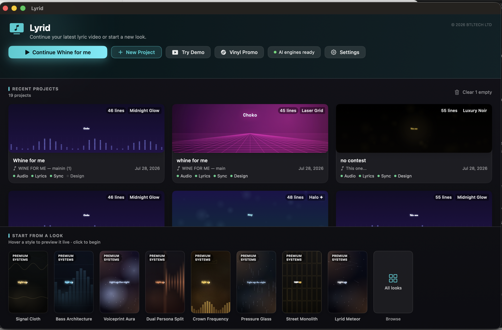

AI Lyric Video Maker · Mac
AI-synced lyric videos for musicians — made locally on your Mac
Drop in a song, paste your lyrics, and Lyrid times every word into a share-ready lyric video. Your audio is processed on your Mac. No subscription.
Free to try · the trial adds a small watermark you remove by activating.

Features
Everything you need to ship a lyric video
From raw track to polished vertical clip in minutes.
Automatic word sync
Lyrid separates the vocal, lines up your lyrics to the audio, and times every word. Fine-tune any line by dragging.
Your words, your spelling
Lyrid matches the lyrics you typed to the vocal sound by sound — it never guesses what you sang. So Pidgin, patois and slang come out exactly as you wrote them, instead of being quietly corrected into standard English.
34 Looks & Quick Starts
34 one-tap Looks in the full catalogue, with 8 Quick Start shortcuts into that same catalogue, mood presets, and Auto-Design — with motion, glow and beat reactivity baked in.
8–30s social clips
Cut any hook into a vertical clip for Reels, TikTok and Shorts, with smooth audio fades. Or export the full song.
Photo & video backgrounds
Use your own image or a looping video behind the lyrics — keep it silent or mix its sound under your track.
Private by design
Your audio is processed on your Mac and never uploaded. Unreleased tracks stay on your machine.
Every format
9:16, 1:1, 16:9 and 4:5 at up to full resolution — plus a one-click Publish Pack for all your platforms at once.
Halo ✦ section motion
Halo ✦ can follow song sections when lyrics include markers like [Verse], [Hook] or [Bridge], with Smart motion active.
The 2026 glitch look
Beat-gated RGB split, CRT scanlines and slice jitter that fire on the beat — not constantly. Includes the free Glitch Pop preset.
Brand Kits & custom styles
Manage custom styles in the Brand tab. Duplicate a project keeping its sync, restyle and re-export in minutes, or share looks as .lyridstyle files.
Dialect & Vocabulary
Built for artists whose lyrics aren't standard English
Pidgin, patois, slang and code-switching — kept as you wrote them.
Paste your lyrics
Type them the way you sing them. Lyrid aligns your typed text sound for sound, so no spelling gets "fixed" on the way in — the words on screen match character for character.
Lyrid listens, not guesses
It isolates the vocal, then matches your lyrics to the sound of the singing itself rather than relying solely on transcription. That's why it holds up on accents and dialects that speech-to-text mangles.
No lyrics to hand?
Transcribe gives you a rough draft to edit, biased with a Nigerian Pidgin word list you can extend with your own vocabulary. Correct a chorus once and Lyrid offers to fix every other place it's sung.
Optional: add a plain-English caption under each line for listeners who don't speak the dialect — your lyrics stay exactly as written, with the meaning shown underneath.
Pricing
One price. Yours to keep.
No subscription. A one-time licence with free updates across Lyrid 1.x.
Introductory price — rising to £29 soon. Lock in £24 today.
- Lifetime licence for Lyrid 1.x
- Activate your Mac using the device seat limit set at checkout
- All 34 Looks, clips and export formats
- Free updates & fixes within 1.x
- No watermark
FAQ
Lyrid questions answered
What is Lyrid?
Lyrid is a Mac app that automatically turns a song into a synced, animated lyric video ready for social platforms.
Do I need video-editing experience?
No. Lyrid syncs the lyrics for you and gives you 34 ready-made Looks — you pick a style and export.
Which platforms can I make videos for?
TikTok, Instagram Reels, YouTube, YouTube Shorts and Spotify Canvas, with vertical, square, widescreen and portrait sizes.
Can I use my own lyrics, including Pidgin or slang?
Yes. Type or paste your exact lyrics to preserve Pidgin, patois, slang and custom spelling sound-for-sound, or let Lyrid transcribe a draft from the audio.
Is there a watermark?
You can try Lyrid for free with a small watermark; activating your licence removes it.
Does my music get uploaded anywhere?
No. Your audio is processed on your Mac and never leaves your computer. Lyrid may use the network for first-run engine/model setup, licence checks, optional anonymous diagnostics, and optional text helpers if you connect them.
Does Lyrid work offline?
Yes, after setup. Lyrid may need the network for first-run engine/model setup and licence activation, but the lyric-video workflow runs locally and your audio is not uploaded.
Is it a subscription?
No. Lyrid is a one-time purchase. Launch founders price is £24, with standard pricing at £29.
What do I need to run it?
An Apple Silicon Mac (M1, M2, M3, M4 or newer) running macOS 14 Sonoma or later.